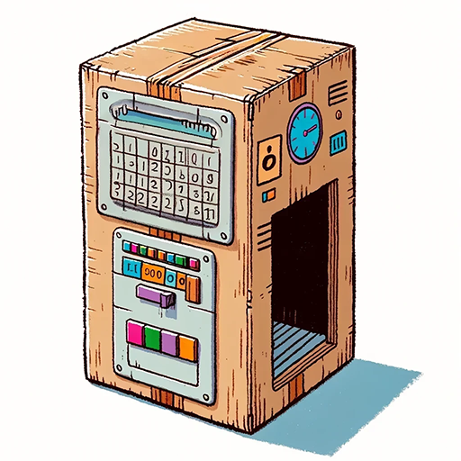

Time Machine

Description
With this time machine, I'll be able to go back into the past and stop myself from cutting my own hair.
But then... I wouldn't NEED to make the time machine... soooo, I wouldn't have gone back in time... sooo I WOULD need a time-machine... so... whatever! Let's DO THE DAMN THING.
Materials
- One large refrigerator box
- Two medium-sized plastic tubs
- Aluminum foil
- Colored buttons and switches
- Markers
- A big fan
- Calendar
- Alarm clock
- Scissors
- Glue
- Lots and lots of duct tape
Steps
- Cut and arrange the refrigerator box to create the main structure of the time machine.
- Attach plastic tubs to the sides as temporal engines using duct tape.
- Cover the tubs with aluminum foil and accentuate with metallic spray paint.
- Create a control panel using cardboard, affixing buttons and switches.
- Install LED lights behind the control panel for functional lighting effects.
- Draw circuits with permanent markers and set up wiring for the LEDs.
- Use the fan as a rear propeller, decorating it to match the time machine.
- Ensure all connections are secure with electrical tape and check the wiring.
- Decorate the exterior with markers to add details such as time circuits.
- Perform a final inspection to ensure everything is operational and safe.